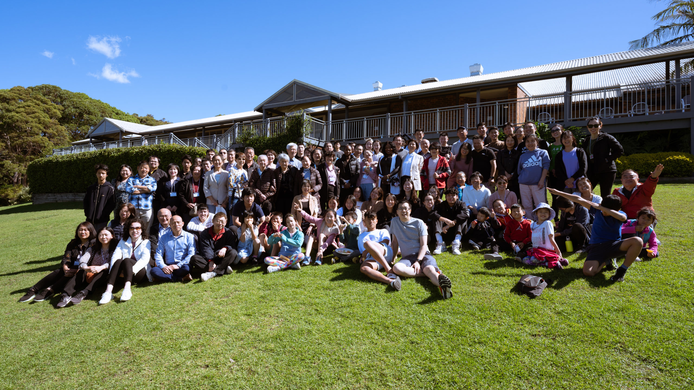

We are…
genuine Christians who are absolute for the common faith. We have received the Lord Jesus Christ as our Lord and Saviour. We have been washed by His precious blood and regenerated with His divine life, and He is living in us as the Spirit. We love Him, we serve Him, and we are seeking to bring many others to a living knowledge of Him.